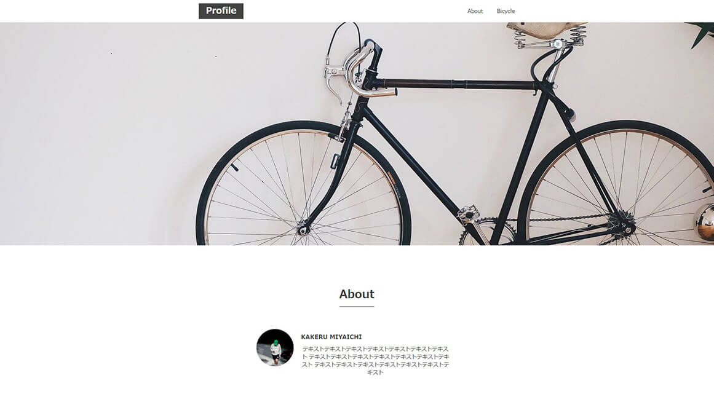
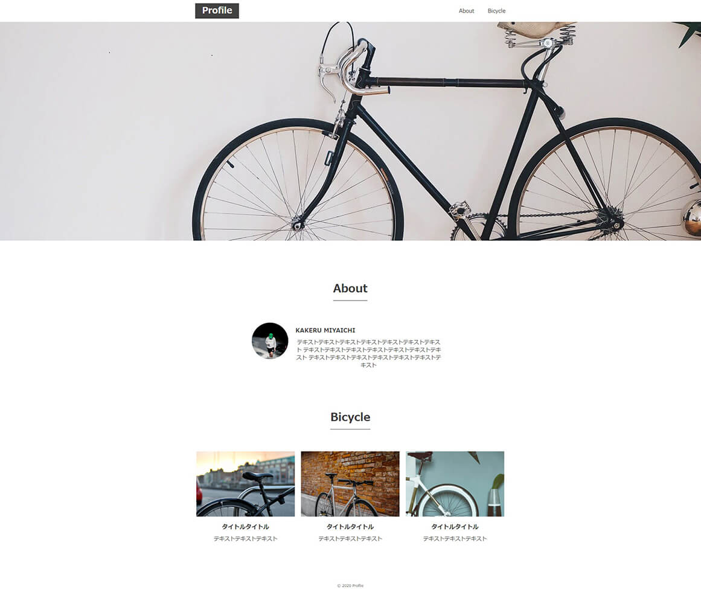

Bicycle
制作期間： 3日
使用言語： HTML, CSS
レスポンシブ： PCサイズのみ
ページ数： TOPページのみ
初めてコーディングしたサイトです。
シングルページで構成もごく簡単なサイトですが、初めて模写をしたので試行錯誤し、時間がかかったことを覚えています。


リンクボタンの作り方や、要素を横並びにするなど、学びたての知識を復習しながら組み立てました。
自己学習でサイトを模写したことで、様々なCSSの使い方を自発的に学ぶいい機会になりました。